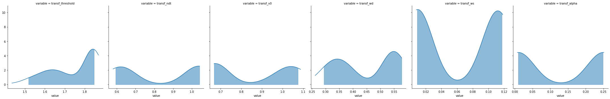
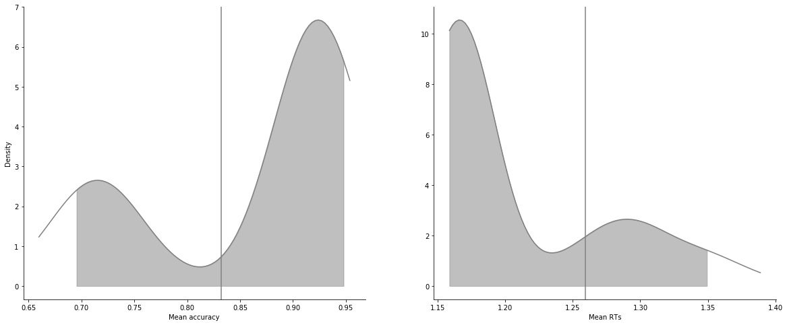
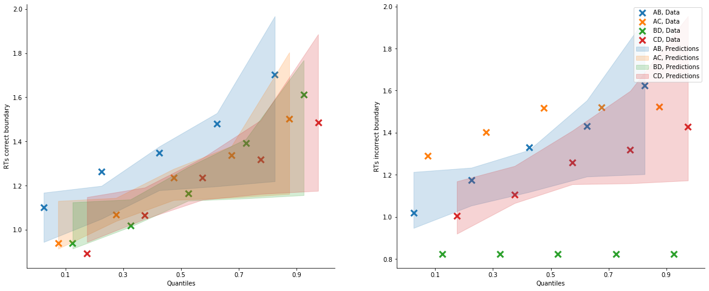
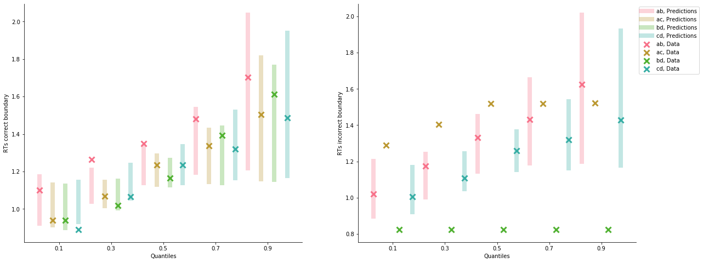

[1]:
import rlssm
import pandas as pd
import os
[2]:
par_path = os.path.abspath(os.path.join(os.getcwd(), os.pardir))
data_path = os.path.join(par_path, 'data/data_experiment.csv')
data = pd.read_csv(data_path, index_col=0)
data = data[data.participant == 12].reset_index(drop=True)
data['block_label'] += 1
# data = data[data['trial_block'] == 1]
data
INFO:numexpr.utils:NumExpr defaulting to 4 threads.
[2]:
| participant | block_label | trial_block | f_cor | f_inc | cor_option | inc_option | times_seen | rt | accuracy | |
|---|---|---|---|---|---|---|---|---|---|---|
| 0 | 12 | 1.0 | 1.0 | 48.0 | 40.0 | 4 | 2 | 1.0 | 0.822152 | 0.0 |
| 1 | 12 | 1.0 | 2.0 | 50.0 | 37.0 | 3 | 1 | 1.0 | 0.858400 | 1.0 |
| 2 | 12 | 1.0 | 3.0 | 62.0 | 41.0 | 4 | 2 | 2.0 | 1.014982 | 1.0 |
| 3 | 12 | 1.0 | 4.0 | 47.0 | 36.0 | 3 | 1 | 2.0 | 1.001788 | 1.0 |
| 4 | 12 | 1.0 | 5.0 | 54.0 | 39.0 | 4 | 2 | 3.0 | 0.985146 | 1.0 |
| ... | ... | ... | ... | ... | ... | ... | ... | ... | ... | ... |
| 233 | 12 | 3.0 | 76.0 | 55.0 | 40.0 | 4 | 2 | 38.5 | 0.914431 | 1.0 |
| 234 | 12 | 3.0 | 77.0 | 52.0 | 37.0 | 3 | 1 | 38.5 | 1.276829 | 1.0 |
| 235 | 12 | 3.0 | 78.0 | 49.0 | 48.0 | 4 | 3 | 40.0 | 1.299635 | 1.0 |
| 236 | 12 | 3.0 | 79.0 | 34.0 | 33.0 | 2 | 1 | 39.0 | 1.116690 | 1.0 |
| 237 | 12 | 3.0 | 80.0 | 44.0 | 37.0 | 2 | 1 | 40.0 | 1.117028 | 1.0 |
238 rows × 10 columns
[29]:
model = rlssm.RLARDModel_2A(2,
separate_learning_rates=True)
INFO:pystan:COMPILING THE C++ CODE FOR MODEL anon_model_7ce1dcc58339c30d1bfeedad678d7205 NOW.
[4]:
model.family, model.model_label, model.hierarchical_levels
[4]:
('RLARDM_2A', 'RLARDM_2A', 1)
[5]:
# sampling parameters
n_iter = 700
n_chains = 2
n_thin = 5
# learning parameters
K = 4 # n options
initial_value_learning = 17.5 # intitial value (Q0)
[6]:
model_fit = model.fit(data,
K,
initial_value_learning,
thin = n_thin,
iter = n_iter,
chains = n_chains)
WARNING:pystan:Maximum (flat) parameter count (1000) exceeded: skipping diagnostic tests for n_eff and Rhat.
To run all diagnostics call pystan.check_hmc_diagnostics(fit)
WARNING:pystan:140 of 140 iterations ended with a divergence (100 %).
WARNING:pystan:Try running with adapt_delta larger than 0.8 to remove the divergences.
WARNING:pystan:Chain 1: E-BFMI = 0.007
WARNING:pystan:E-BFMI below 0.2 indicates you may need to reparameterize your model
Checks MCMC diagnostics:
n_eff / iter looks reasonable for all parameters
140.0 of 140 iterations ended with a divergence (100.0%)
Try running with larger adapt_delta to remove the divergences
0 of 140 iterations saturated the maximum tree depth of 10 (0.0%)
Chain 0: E-BFMI = 0.006999637874081752
E-BFMI below 0.2 indicates you may need to reparameterize your model
[7]:
model_fit.rhat.describe()
[7]:
| rhat | |
|---|---|
| count | 6.000000 |
| mean | 14.496855 |
| std | 11.780362 |
| min | 2.646822 |
| 25% | 6.554875 |
| 50% | 10.765577 |
| 75% | 20.856918 |
| max | 33.431144 |
[8]:
model_fit.rhat.head()
[8]:
| rhat | variable | |
|---|---|---|
| 0 | 2.646822 | threshold |
| 1 | 12.389263 | ndt |
| 2 | 9.141892 | v0 |
| 3 | 5.692536 | wd |
| 4 | 23.679470 | ws |
[9]:
model_fit.waic
[9]:
{'lppd': -230.9398349400783,
'p_waic': 17514.23985940919,
'waic': 35490.35938869854,
'waic_se': 1735.4878887958203}
[10]:
model_fit.samples
[10]:
| chain | draw | transf_threshold | transf_ndt | transf_v0 | transf_wd | transf_ws | transf_alpha | |
|---|---|---|---|---|---|---|---|---|
| 0 | 0 | 14 | 1.836395 | 1.038446 | 0.670079 | 0.567871 | 0.116490 | 0.249079 |
| 1 | 0 | 62 | 1.845472 | 1.036441 | 0.673877 | 0.528618 | 0.107489 | 0.250865 |
| 2 | 0 | 22 | 1.836591 | 1.038532 | 0.671366 | 0.559223 | 0.114331 | 0.250159 |
| 3 | 0 | 10 | 1.839662 | 1.039859 | 0.669068 | 0.571650 | 0.116937 | 0.249250 |
| 4 | 0 | 2 | 1.838190 | 1.039024 | 0.670034 | 0.576009 | 0.117929 | 0.246874 |
| ... | ... | ... | ... | ... | ... | ... | ... | ... |
| 135 | 1 | 32 | 1.668480 | 0.619535 | 1.065593 | 0.336427 | 0.010007 | 0.011090 |
| 136 | 1 | 67 | 1.702099 | 0.626051 | 1.039958 | 0.323031 | 0.011048 | 0.011097 |
| 137 | 1 | 26 | 1.548712 | 0.659376 | 1.063680 | 0.373337 | 0.010299 | 0.009089 |
| 138 | 1 | 3 | 1.553410 | 0.593951 | 0.953637 | 0.374990 | 0.008892 | 0.008166 |
| 139 | 1 | 27 | 1.567425 | 0.643118 | 1.075702 | 0.399837 | 0.010524 | 0.009069 |
140 rows × 8 columns
[11]:
model_fit.trial_samples
[11]:
OrderedDict([('drift_cor_t',
array([[ 4.74721588, 4.74721588, 7.41657061, ..., 15.00186166,
12.11802103, 11.35203775],
[ 4.43599671, 4.43599671, 6.92604981, ..., 13.91745555,
11.25942622, 10.54316638],
[ 4.67294581, 4.67294581, 7.30794759, ..., 14.74576506,
11.91628524, 11.15942268],
...,
[ 1.42415355, 1.42415355, 1.45625996, ..., 2.29599907,
2.19417406, 2.19356414],
[ 1.26484789, 1.26484789, 1.29319248, ..., 2.01977797,
1.93695733, 1.93685457],
[ 1.44404645, 1.44404645, 1.47811224, ..., 2.35580565,
2.25123795, 2.25059787]])),
('drift_inc_t',
array([[ 4.74721588, 4.74721588, 5.15345903, ..., 10.77400446,
6.83597129, 7.10274483],
[ 4.43599671, 4.43599671, 4.80426264, ..., 9.97945352,
6.34198948, 6.59411949],
[ 4.67294581, 4.67294581, 5.06963526, ..., 10.58077271,
6.71434438, 6.97900372],
...,
[ 1.42415355, 1.42415355, 1.40196946, ..., 1.38717574,
1.31368118, 1.3142875 ],
[ 1.26484789, 1.26484789, 1.24419965, ..., 1.18551818,
1.12985227, 1.13021598],
[ 1.44404645, 1.44404645, 1.42009715, ..., 1.38427112,
1.31001813, 1.31066166]])),
('threshold_t',
array([[1.83639479, 1.83639479, 1.83639479, ..., 1.83639479, 1.83639479,
1.83639479],
[1.84547167, 1.84547167, 1.84547167, ..., 1.84547167, 1.84547167,
1.84547167],
[1.83659075, 1.83659075, 1.83659075, ..., 1.83659075, 1.83659075,
1.83659075],
...,
[1.54871238, 1.54871238, 1.54871238, ..., 1.54871238, 1.54871238,
1.54871238],
[1.55340993, 1.55340993, 1.55340993, ..., 1.55340993, 1.55340993,
1.55340993],
[1.56742459, 1.56742459, 1.56742459, ..., 1.56742459, 1.56742459,
1.56742459]])),
('ndt_t',
array([[1.03844603, 1.03844603, 1.03844603, ..., 1.03844603, 1.03844603,
1.03844603],
[1.03644094, 1.03644094, 1.03644094, ..., 1.03644094, 1.03644094,
1.03644094],
[1.03853195, 1.03853195, 1.03853195, ..., 1.03853195, 1.03853195,
1.03853195],
...,
[0.65937613, 0.65937613, 0.65937613, ..., 0.65937613, 0.65937613,
0.65937613],
[0.59395074, 0.59395074, 0.59395074, ..., 0.59395074, 0.59395074,
0.59395074],
[0.64311776, 0.64311776, 0.64311776, ..., 0.64311776, 0.64311776,
0.64311776]]))])
[12]:
model_fit.plot_posteriors(height=5, show_intervals='HDI');

[13]:
pp = model_fit.get_posterior_predictives_df(n_posterior_predictives=100)
pp
[13]:
| variable | rt | ... | accuracy | ||||||||||||||||||
|---|---|---|---|---|---|---|---|---|---|---|---|---|---|---|---|---|---|---|---|---|---|
| trial | 1 | 2 | 3 | 4 | 5 | 6 | 7 | 8 | 9 | 10 | ... | 229 | 230 | 231 | 232 | 233 | 234 | 235 | 236 | 237 | 238 |
| sample | |||||||||||||||||||||
| 1 | 1.412446 | 1.352446 | 1.302446 | 1.243446 | 1.153446 | 1.229446 | 1.243446 | 1.149446 | 1.174446 | 1.170446 | ... | 1.0 | 1.0 | 1.0 | 1.0 | 1.0 | 1.0 | 1.0 | 1.0 | 1.0 | 1.0 |
| 2 | 1.325441 | 1.384441 | 1.330441 | 1.158441 | 1.224441 | 1.215441 | 1.181441 | 1.204441 | 1.247441 | 1.148441 | ... | 1.0 | 1.0 | 1.0 | 1.0 | 1.0 | 1.0 | 1.0 | 1.0 | 1.0 | 1.0 |
| 3 | 1.423532 | 1.318532 | 1.263532 | 1.314532 | 1.213532 | 1.293532 | 1.190532 | 1.215532 | 1.230532 | 1.117532 | ... | 1.0 | 1.0 | 0.0 | 1.0 | 1.0 | 1.0 | 1.0 | 1.0 | 0.0 | 1.0 |
| 4 | 1.339859 | 1.232859 | 1.323859 | 1.304859 | 1.237859 | 1.228859 | 1.152859 | 1.177859 | 1.179859 | 1.166859 | ... | 1.0 | 1.0 | 1.0 | 1.0 | 1.0 | 1.0 | 1.0 | 1.0 | 1.0 | 1.0 |
| 5 | 1.580024 | 1.287024 | 1.212024 | 1.338024 | 1.174024 | 1.258024 | 1.182024 | 1.148024 | 1.195024 | 1.145024 | ... | 1.0 | 1.0 | 1.0 | 1.0 | 1.0 | 1.0 | 1.0 | 1.0 | 1.0 | 1.0 |
| ... | ... | ... | ... | ... | ... | ... | ... | ... | ... | ... | ... | ... | ... | ... | ... | ... | ... | ... | ... | ... | ... |
| 96 | 0.864542 | 1.458542 | 1.338542 | 1.775542 | 1.200542 | 1.951542 | 1.009542 | 1.628542 | 0.889542 | 1.362542 | ... | 0.0 | 1.0 | 0.0 | 1.0 | 1.0 | 1.0 | 1.0 | 1.0 | 1.0 | 1.0 |
| 97 | 1.489937 | 1.513937 | 1.473937 | 0.856937 | 0.985937 | 1.661937 | 1.476937 | 2.120937 | 1.106937 | 1.994937 | ... | 1.0 | 0.0 | 0.0 | 1.0 | 1.0 | 1.0 | 0.0 | 1.0 | 1.0 | 1.0 |
| 98 | 1.628273 | 1.467273 | 1.192273 | 1.026273 | 1.115273 | 1.730273 | 1.024273 | 1.569273 | 1.597273 | 0.924273 | ... | 1.0 | 1.0 | 1.0 | 1.0 | 1.0 | 1.0 | 1.0 | 0.0 | 1.0 | 1.0 |
| 99 | 1.302620 | 1.436620 | 1.291620 | 1.521620 | 1.384620 | 1.063620 | 1.515620 | 1.008620 | 1.589620 | 1.444620 | ... | 1.0 | 1.0 | 0.0 | 1.0 | 1.0 | 1.0 | 1.0 | 0.0 | 1.0 | 1.0 |
| 100 | 1.044693 | 1.495693 | 4.293693 | 0.904693 | 1.053693 | 2.194693 | 1.241693 | 1.633693 | 1.165693 | 1.799693 | ... | 1.0 | 1.0 | 0.0 | 1.0 | 1.0 | 1.0 | 1.0 | 1.0 | 1.0 | 0.0 |
100 rows × 476 columns
[14]:
pp_summary = model_fit.get_posterior_predictives_summary(n_posterior_predictives=100)
pp_summary
[14]:
| mean_accuracy | mean_rt | skewness | quant_10_rt_incorrect | quant_30_rt_incorrect | quant_50_rt_incorrect | quant_70_rt_incorrect | quant_90_rt_incorrect | quant_10_rt_correct | quant_30_rt_correct | quant_50_rt_correct | quant_70_rt_correct | quant_90_rt_correct | |
|---|---|---|---|---|---|---|---|---|---|---|---|---|---|
| sample | |||||||||||||
| 1 | 0.886555 | 1.163799 | 1.806373 | 1.160046 | 1.168246 | 1.177446 | 1.200446 | 1.267046 | 1.121446 | 1.138446 | 1.149446 | 1.168446 | 1.213446 |
| 2 | 0.915966 | 1.168285 | 2.375155 | 1.137841 | 1.166841 | 1.198441 | 1.205741 | 1.222141 | 1.128541 | 1.140541 | 1.158941 | 1.177341 | 1.215741 |
| 3 | 0.920168 | 1.163007 | 1.515046 | 1.152532 | 1.163332 | 1.175532 | 1.195332 | 1.247532 | 1.124532 | 1.139532 | 1.153532 | 1.171532 | 1.208932 |
| 4 | 0.907563 | 1.163665 | 2.529818 | 1.146059 | 1.173659 | 1.189359 | 1.207659 | 1.247859 | 1.123859 | 1.138859 | 1.150859 | 1.172859 | 1.207859 |
| 5 | 0.936975 | 1.160675 | 2.753701 | 1.151624 | 1.173824 | 1.185024 | 1.221824 | 1.261024 | 1.121224 | 1.137024 | 1.151024 | 1.168024 | 1.200824 |
| ... | ... | ... | ... | ... | ... | ... | ... | ... | ... | ... | ... | ... | ... |
| 96 | 0.672269 | 1.283651 | 1.663472 | 0.920342 | 1.055442 | 1.202042 | 1.470642 | 1.932642 | 0.934442 | 1.074342 | 1.175042 | 1.350042 | 1.666842 |
| 97 | 0.731092 | 1.323021 | 1.562563 | 0.949737 | 1.111837 | 1.259937 | 1.366137 | 1.722137 | 0.958937 | 1.117437 | 1.228437 | 1.409237 | 1.849437 |
| 98 | 0.777311 | 1.349676 | 1.767628 | 1.066873 | 1.167473 | 1.387273 | 1.507473 | 2.160673 | 0.935073 | 1.105073 | 1.232273 | 1.388873 | 1.752273 |
| 99 | 0.718487 | 1.323393 | 1.659548 | 1.013620 | 1.178020 | 1.321620 | 1.457020 | 1.660020 | 0.955620 | 1.095620 | 1.226620 | 1.415620 | 1.704620 |
| 100 | 0.739496 | 1.314180 | 1.868509 | 0.991093 | 1.116893 | 1.182693 | 1.455893 | 1.996293 | 0.931193 | 1.080693 | 1.209193 | 1.396193 | 1.755193 |
100 rows × 13 columns
[15]:
g = model_fit.plot_mean_posterior_predictives(n_posterior_predictives=100, figsize=(20,8), show_intervals='HDI')

[16]:
model_fit.plot_quantiles_posterior_predictives(n_posterior_predictives=100, kind='shades');

Grouped¶
[17]:
import numpy as np
[18]:
data['choice_pair'] = 'AB'
data.loc[(data.cor_option == 3) & (data.inc_option == 1), 'choice_pair'] = 'AC'
data.loc[(data.cor_option == 4) & (data.inc_option == 2), 'choice_pair'] = 'BD'
data.loc[(data.cor_option == 4) & (data.inc_option == 3), 'choice_pair'] = 'CD'
data['block_bins'] = pd.cut(data.trial_block, 8, labels=np.arange(1, 9))
[19]:
data.head()
[19]:
| index | participant | block_label | trial_block | f_cor | f_inc | cor_option | inc_option | times_seen | rt | accuracy | accuracy_rescale | choice_pair | block_bins | |
|---|---|---|---|---|---|---|---|---|---|---|---|---|---|---|
| 0 | 0 | 12 | 1.0 | 1.0 | 48.0 | 40.0 | 4 | 2 | 1.0 | 0.822152 | 0.0 | 2 | BD | 1 |
| 1 | 1 | 12 | 1.0 | 2.0 | 50.0 | 37.0 | 3 | 1 | 1.0 | 0.858400 | 1.0 | 1 | AC | 1 |
| 2 | 2 | 12 | 1.0 | 3.0 | 62.0 | 41.0 | 4 | 2 | 2.0 | 1.014982 | 1.0 | 1 | BD | 1 |
| 3 | 3 | 12 | 1.0 | 4.0 | 47.0 | 36.0 | 3 | 1 | 2.0 | 1.001788 | 1.0 | 1 | AC | 1 |
| 4 | 4 | 12 | 1.0 | 5.0 | 54.0 | 39.0 | 4 | 2 | 3.0 | 0.985146 | 1.0 | 1 | BD | 1 |
[20]:
model_fit.get_grouped_posterior_predictives_summary(
grouping_vars=['block_label', 'choice_pair'],
quantiles=[.3, .5, .7],
n_posterior_predictives=100)
[20]:
| mean_accuracy | mean_rt | skewness | quant_30_rt_incorrect | quant_30_rt_correct | quant_50_rt_incorrect | quant_50_rt_correct | quant_70_rt_incorrect | quant_70_rt_correct | |||
|---|---|---|---|---|---|---|---|---|---|---|---|
| block_label | choice_pair | sample | |||||||||
| 1.0 | AB | 1 | 0.947368 | 1.200709 | 0.435050 | 1.196446 | 1.179646 | 1.196446 | 1.199446 | 1.196446 | 1.218546 |
| 2 | 0.842105 | 1.211283 | 0.578786 | 1.226441 | 1.188941 | 1.240441 | 1.194441 | 1.255641 | 1.208941 | ||
| 3 | 0.947368 | 1.200321 | -0.463886 | 1.202532 | 1.185632 | 1.202532 | 1.200032 | 1.202532 | 1.224132 | ||
| 4 | 0.947368 | 1.190069 | -0.037487 | 1.222859 | 1.164959 | 1.222859 | 1.184359 | 1.222859 | 1.212759 | ||
| 5 | 0.842105 | 1.186550 | 0.974489 | 1.181424 | 1.174024 | 1.183024 | 1.182524 | 1.185024 | 1.196024 | ||
| ... | ... | ... | ... | ... | ... | ... | ... | ... | ... | ... | ... |
| 3.0 | CD | 96 | 0.400000 | 1.259942 | 1.204002 | 1.060542 | 1.108342 | 1.180542 | 1.225542 | 1.361942 | 1.273442 |
| 97 | 0.600000 | 1.262837 | 1.504366 | 1.097837 | 1.125737 | 1.183437 | 1.273937 | 1.263637 | 1.345437 | ||
| 98 | 0.500000 | 1.324223 | 0.543477 | 1.059173 | 1.086273 | 1.446773 | 1.199773 | 1.750173 | 1.313473 | ||
| 99 | 0.650000 | 1.353470 | 0.934393 | 1.118220 | 1.127020 | 1.455620 | 1.154620 | 1.673420 | 1.353020 | ||
| 100 | 0.350000 | 1.292493 | 3.654246 | 1.190093 | 1.113293 | 1.258693 | 1.209693 | 1.303493 | 1.250093 |
1200 rows × 9 columns
[21]:
model_fit.get_grouped_posterior_predictives_summary(
grouping_vars=['block_bins'],
quantiles=[.3, .5, .7],
n_posterior_predictives=100)
[21]:
| mean_accuracy | mean_rt | skewness | quant_30_rt_incorrect | quant_30_rt_correct | quant_50_rt_incorrect | quant_50_rt_correct | quant_70_rt_incorrect | quant_70_rt_correct | ||
|---|---|---|---|---|---|---|---|---|---|---|
| block_bins | sample | |||||||||
| 1 | 1 | 0.766667 | 1.185313 | 0.718293 | 1.179246 | 1.147046 | 1.189446 | 1.168446 | 1.202246 | 1.216246 |
| 2 | 0.766667 | 1.203541 | 4.369295 | 1.156841 | 1.164041 | 1.186441 | 1.180441 | 1.188841 | 1.196241 | |
| 3 | 0.766667 | 1.187799 | 1.097498 | 1.198732 | 1.150132 | 1.210532 | 1.167532 | 1.229332 | 1.181532 | |
| 4 | 0.900000 | 1.203492 | 2.960085 | 1.158059 | 1.166659 | 1.166859 | 1.181859 | 1.301659 | 1.199259 | |
| 5 | 0.900000 | 1.205157 | 2.879108 | 1.154424 | 1.170024 | 1.156024 | 1.186024 | 1.171224 | 1.203224 | |
| ... | ... | ... | ... | ... | ... | ... | ... | ... | ... | ... |
| 8 | 96 | 0.785714 | 1.160792 | 0.362029 | 1.118042 | 1.024742 | 1.238042 | 1.088042 | 1.290042 | 1.280242 |
| 97 | 0.785714 | 1.225544 | 0.402957 | 1.029437 | 1.118237 | 1.200437 | 1.175937 | 1.346937 | 1.300137 | |
| 98 | 0.821429 | 1.257809 | 0.827302 | 1.329073 | 1.109473 | 1.420273 | 1.147273 | 1.579473 | 1.314273 | |
| 99 | 0.857143 | 1.141406 | -0.050210 | 1.199020 | 1.029320 | 1.222620 | 1.115620 | 1.254920 | 1.216820 | |
| 100 | 0.785714 | 1.304050 | 1.609268 | 1.020193 | 1.118993 | 1.111193 | 1.178693 | 1.286693 | 1.262793 |
800 rows × 9 columns
[22]:
data.head()
[22]:
| index | participant | block_label | trial_block | f_cor | f_inc | cor_option | inc_option | times_seen | rt | accuracy | accuracy_rescale | choice_pair | block_bins | |
|---|---|---|---|---|---|---|---|---|---|---|---|---|---|---|
| 0 | 0 | 12 | 1.0 | 1.0 | 48.0 | 40.0 | 4 | 2 | 1.0 | 0.822152 | 0.0 | 2 | BD | 1 |
| 1 | 1 | 12 | 1.0 | 2.0 | 50.0 | 37.0 | 3 | 1 | 1.0 | 0.858400 | 1.0 | 1 | AC | 1 |
| 2 | 2 | 12 | 1.0 | 3.0 | 62.0 | 41.0 | 4 | 2 | 2.0 | 1.014982 | 1.0 | 1 | BD | 1 |
| 3 | 3 | 12 | 1.0 | 4.0 | 47.0 | 36.0 | 3 | 1 | 2.0 | 1.001788 | 1.0 | 1 | AC | 1 |
| 4 | 4 | 12 | 1.0 | 5.0 | 54.0 | 39.0 | 4 | 2 | 3.0 | 0.985146 | 1.0 | 1 | BD | 1 |
[23]:
model_fit.plot_mean_grouped_posterior_predictives(grouping_vars=['block_bins', 'choice_pair'],
n_posterior_predictives=100,
figsize=(20,8));

[24]:
model_fit.plot_quantiles_grouped_posterior_predictives(
n_posterior_predictives=100,
grouping_var='choice_pair',
kind='shades',
quantiles=[.1, .3, .5, .7, .9]);

[25]:
import seaborn as sns
[26]:
model_fit.plot_quantiles_grouped_posterior_predictives(
n_posterior_predictives=300,
grouping_var='choice_pair',
palette = sns.color_palette('husl'),
intervals_kws={'alpha': .3, 'lw':8},
hue_order=['AB', 'AC', 'BD', 'CD'],
hue_labels=['ab', 'ac', 'bd', 'cd']);
/Users/Khamir/DecisionMaking/_Reports/_7/rlssm/rlssm/fits_race.py:242: UserWarning: Cannot have more posterior predictive samples than posterior samples. Will continue with n_posterior_predictives=140
pp_rt, pp_acc = self.get_posterior_predictives(n_posterior_predictives, **kwargs)

[27]:
model_fit.plot_mean_grouped_posterior_predictives(
grouping_vars=['block_bins'],
n_posterior_predictives=100,
figsize=(20,8));

[ ]: